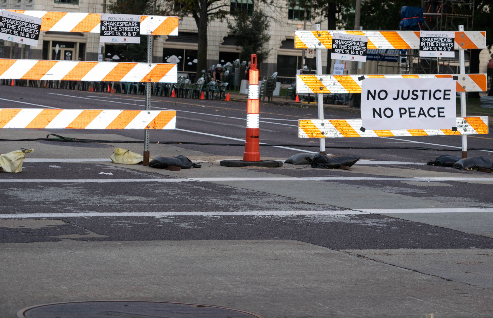
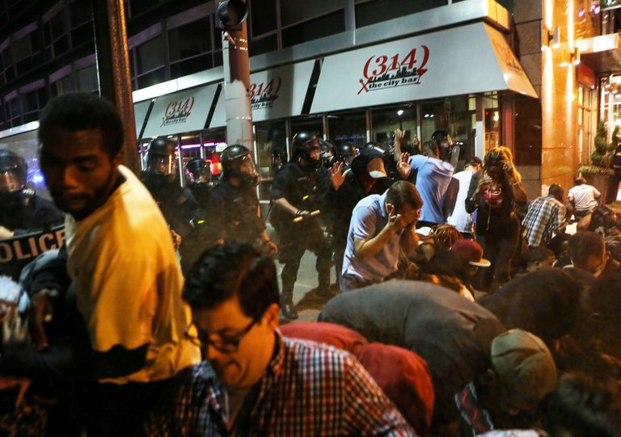

The Stockely Verdict
Tension erupted this past week in saint louis because Jason Stockely was found not guilty in the murder of Anthony Lamar smith on September 15th 2017.
September 15th Protests

On September 15th protestors swept through the city. Starting at the courthouse they made their way down to the central west end. Blocking off access to the highways and making it difficult to traverse the downtown area. Police were out in force with riot gear and pepper spray. 13 Protestors arrested, 4 Officers injured.
September 16th Protests
Over all the protests stayed peaceful throughout the days, but after dark agitators came out and wrecked windows on delmar.